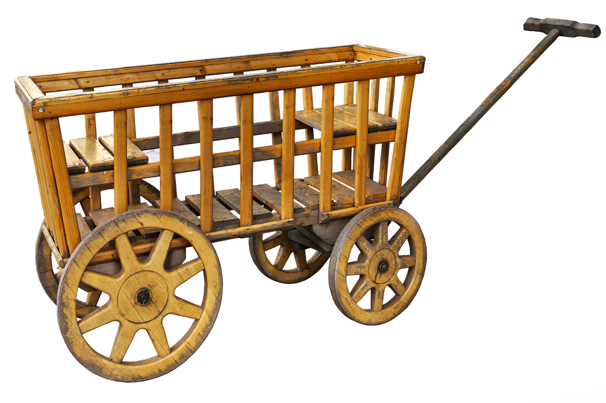
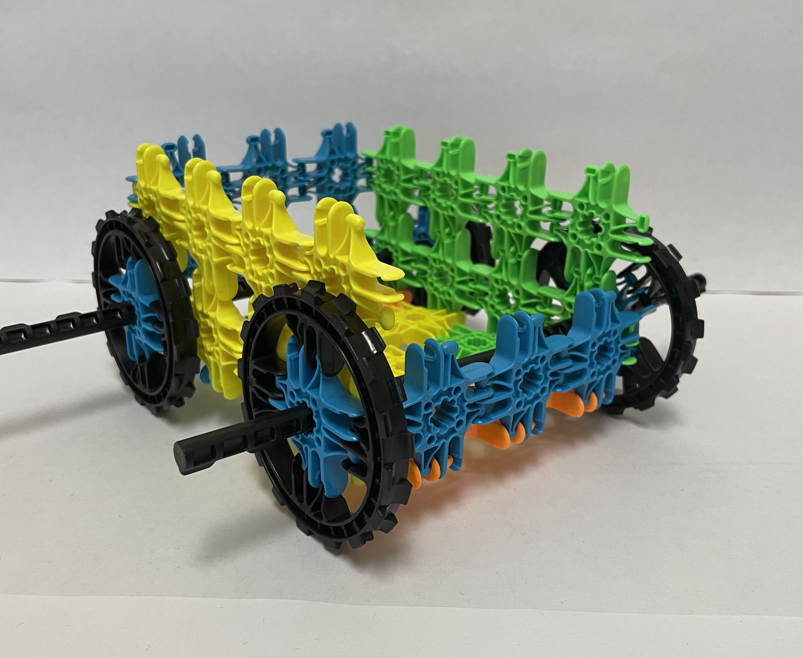
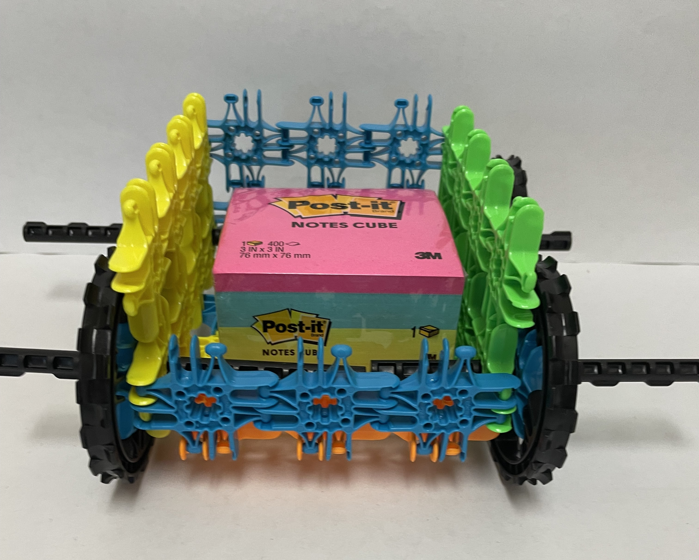

Do It! Lux Blox: Fairy and Folk Tale Engineering
 The Challenge
The Challenge
Your challenge is to choose a fairy tale or folk tale and identify the problem in the text. Is there a structure or device that could be created to help solve the problem? Then, use Lux Blox to design, create, and test your structure or device that solves the problem.
Project Steps
-
Choose a Fairy Tale or Folk Tale
-
Identify the Problem
-
Design a Structure
-
Test and Re-design
-
Complete the Summary Report
Choose a Fairy Tale or Folk Tale
Choose any fairy tale or folk tale that has a problem you will like to solve. Some ideas of fairy tales include Goldilocks and the Three Bears, The Three Billy Goats Gruff, and The Three Little Pigs. Some ideas of folk tales include Paul Bunyan, The Tortoise and the Hare, and Johnny Appleseed. You are welcome to choose another fairy tale or folk tale that you are knowledgeable about as well. Check out this website for fairy tales.

Identify the Problem
Often times, fairy tales and folk tales will have a problem. Identify the engineering design problem from the story you chose text. For example, in The Three Little Pigs, the problem was that the pigs had to construct a house to live in that they wolf could not blow down. For Paul Bunyan, he needed a wagon to carry different heavy items. Both of these problems can be solved by designing and constructing a structure or device using Lux Blox.
Design a Structure
Design a structure or device to solve the problem. A plan can help you visualize your ideas. Sketching your ideas on paper can help focus your ideas and prepare you to put your plan into action. Take a few minutes to sketch your ideas on paper before you begin building and constructing your design. When you are ready, use the Lux Blox pieces to build your design.

Test and Re-design
Once you build your structure or device, test it out! Does it stand, move, or work? Does it function as you intended? Does it solve the problem from your story? Engineers often look for ways to make their designs even better. How might you improve upon your design?

Complete the Summary Report
It is important to capture your thoughts and ideas upon completion of the Engineering Design Process. You may choose to complete one of the reports below that works best for you.
Summary Report
The fairy tale or folk tale I chose was ________________. In the fairy tale or folk tale, the problem was _______________________. The solution I developed was _____________. The features of my design that helped solve the problem was ________, _____________, and __________.
OR
Summary Report
The fairy or folk tale I chose was _______________________.
|
Problem |
Solution |
Key Features |
|---|---|---|